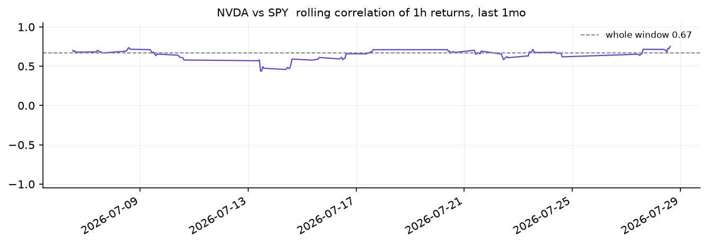
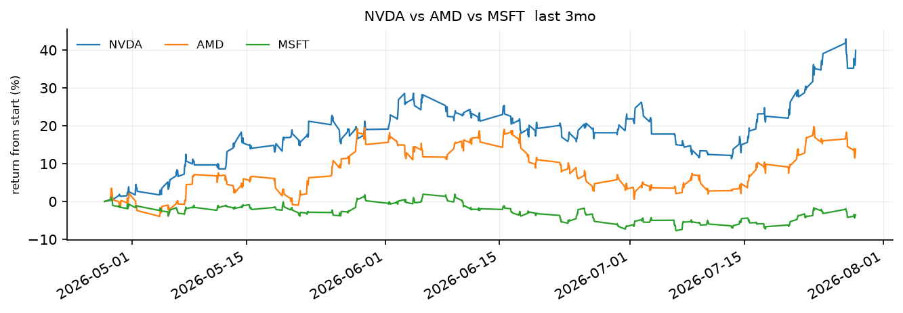
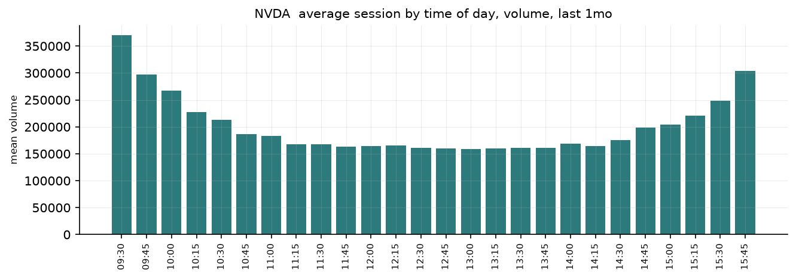

Function calling
Turns natural-language trading requests into calls to ordinary typed functions by mapping function names and closed-set arguments to confidence-aware TypeSafe questions.
当你点一杯"大杯冰燕麦拿铁、不加糖"时，咖啡师并不会把你的句子写下来。他们只在杯子上勾选四个选项。这本实战指南为交易 API 做的正是同样的事情：输入一句话，输出一个函数名及其参数，参数是以枚举形式求值的，每个都带有一个置信度。
"plot rolling correlation between nvda and spy for the past month"
rolling_correlation(symbol='NVDA', benchmark='SPY', window='1mo') confidence 0.91
"compare nvda amd and msft over the past three months"
compare_returns(symbols=['NVDA', 'AMD', 'MSFT'], window='3mo') confidence 0.94
"show me apple daily with volume"
plot_price(symbol='AAPL', resolution='1d', include_volume=True) confidence 0.75
"what tickers do you have"
list_symbols() confidence 1.00这些调用会发送到交易助手里的十个普通函数。它们的参数取值来自固定的列表，所以它们本来就是 Literal：
def plot_price(
symbol: Literal["SPY", "NVDA", "AMD", "AAPL", "MSFT", "TSLA"],
style: Literal["line", "candles"] = "line",
resolution: Literal["1m", "5m", "15m", "1h", "1d"] = "15m",
window: Literal["1d", "1w", "1mo", "3mo"] = "1w",
include_volume: bool = False,
moving_average: Literal["9", "20", "50"] | None = None,
log_scale: bool = False,
): ...取值来自固定列表的参数就是一个闭集。当它从该列表中取一个值时，它会得到一个恰好覆盖这些值的 Choice 问题，因此传到函数里的值必然是函数能接受的值。你不需要改动函数本身。你要添加的是一份用平实语言说明每个参数含义的 spec。到最后，你会得到一个可以指向你自己函数的 Dispatcher。
环境准备
pip install ipython polars matplotlib numpy 'cooksafe>=0.2.0,<0.3.0'设置 TYPESAFE_API_KEY。两个模块与本文件放在一起。trader.py 包含这十个函数，以及一个从缓存读取答案的 TypeSafe 客户端，因此重新渲染时会重放下方的数字而无需调用 API。dispatch.py 包含读取签名和 spec 并发起调用的代码。
import json
from pathlib import Path
from cooksafe import make_playground_link
from dispatch import ROUTE, Dispatcher, closed_sets
from IPython.display import Markdown, display
from trader import TOOLS, client, load
TYPESAFE_MODEL = "jev-1.12"
print(f"{len(TOOLS)} functions over {load().height:,} one-minute bars")10 functions over 156,780 one-minute bars在签名中找出闭集
类型注解已经说明了哪些参数取自固定列表，以及每个列表里有什么。closed_sets 读取一个签名，把这些参数分成三类：choice（一个 Literal，即从列表中取一个值）、set（一个 list[Literal[...]]，即取任意多个），或者 flag（一个 bool，即开或关）。全部十个函数都定义在 trader.py 中。
for name, fn in TOOLS.items():
shapes = closed_sets(fn)
print(
f" {name:<20}{len(shapes)} "
+ ", ".join(f"{a}:{s}" for a, (s, _) in shapes.items())
)
print(
f"\n{sum(len(closed_sets(fn)) for fn in TOOLS.values())} fillable arguments in total"
) list_symbols 0
market_summary 1 window:choice
plot_price 7 symbol:choice, style:choice, resolution:choice, window:choice, include_volume:flag, moving_average:choice, log_scale:flag
intraday_pattern 3 symbol:choice, window:choice, metric:choice
compare_returns 3 symbols:set, window:choice, normalize:flag
rolling_correlation 4 symbol:choice, benchmark:choice, window:choice, resolution:choice
summary_stats 2 symbol:choice, window:choice
volatility 3 symbol:choice, window:choice, annualized:flag
top_movers 2 window:choice, direction:choice
drawdown 3 symbol:choice, window:choice, plot:flag
28 fillable arguments in totaltop_movers 展示了哪些内容会被排除在外。它的三个参数中有两个是闭集。第三个参数 limit 是一个 int，因此它不会得到问题，并保留默认值 3。自由文本、数字和日期的工作方式相同：没有问题，函数自身的默认值生效。
编写 spec
Literal 给你的是字符串 "1mo" 和 "3mo"。它并没有说明用户输入"this quarter"指的是后者的含义。spec 说明了这一点。它为每个参数保存一个问题、每个选项一行说明、每个函数一段描述，以及一个用于在函数之间做选择的额外问题。它保存在 spec.json 中，LLM 可以根据签名替你编写它。
SPEC = json.loads(Path("spec.json").read_text())
for argument in ("style", "moving_average"):
print(
json.dumps(
{argument: SPEC["functions"]["plot_price"]["arguments"][argument]}, indent=2
)
){
"style": {
"question": "Does the user want a plain line or candles?",
"stated": "Does the user say how the chart should be drawn, such as a line, candles, or OHLC bars?",
"options": {
"line": "a simple line through the closing prices",
"candles": "a candlestick or OHLC chart, showing each bar's open, high, low and close"
}
}
}
{
"moving_average": {
"question": "How many bars should the moving average cover - nine, twenty, or fifty?",
"stated": "Does the user ask for a moving average or a smoothed line over the candles?",
"options": {
"9": "a nine-bar moving average, a fast one",
"20": "a twenty-bar moving average",
"50": "a fifty-bar moving average, a slow one"
}
}
}选项的键就是函数接受的字符串，因此之后不需要再把标签映射回参数。stated 让一个参数变为可选。它是第二个是非问题，询问命令是否根本没有提到该参数。当答案是否时，调用会省略该参数，函数自身的默认值随之生效。
集合参数的问题会针对每个成员出现一次，其中 {} 用来代替成员名称。"Does the user want {} in the comparison?" 会变成每个股票代码各一个的问题。
每个问题都应围绕概念来写，而不是围绕用户可能使用的字眼，因为匹配是基于含义的："is amd tracking nvidia lately" 能命中 rolling_correlation，尽管 tracking 和 lately 都没有出现在 spec.json 的任何地方。避免用参数名来命名问题——"Which resolution?" 没有给命令留下任何可供匹配的内容。
把 spec 变成问题
Dispatcher 会根据 spec 一次性构建出这些问题。之后每个命令就是一次请求，承载着函数的选择以及每个函数的参数，而 dispatcher 只读取所选函数的答案。
assistant = Dispatcher(SPEC, TOOLS, client)
print(f"{len(assistant.questions)} questions per command, among them:")
for qid in (
"__tool__",
"plot_price.style",
"plot_price.style?",
"compare_returns.symbols.NVDA",
):
question = assistant.questions[qid]
print(f" {qid:<30}{question['type']:<8}{str(question['instructions'])[:64]}")54 questions per command, among them:
__tool__ choice What is the user asking the trading assistant to do?
plot_price.style choice Does the user want a plain line or candles?
plot_price.style? noul Does the user say how the chart should be drawn, such as a line,
compare_returns.symbols.NVDA noul Does the user want NVDA in the comparison?运行十四条命令
一个请求占一行，它的 confidence 是该调用背后最不确定的那个判断。
COMMANDS = [
"show nvda 1h",
"plot rolling correlation between nvda and spy for the past month",
"when during the day does nvda trade the most",
"what moved today",
"what tickers do you have",
"how did the market do this week",
"candles for tesla with a 20 period moving average",
"compare nvda amd and msft over the past three months",
"how volatile is tsla",
"biggest losers today",
"worst drawdown for nvda this quarter, and chart it please",
"spy stats for the last month",
"show me apple daily with volume",
"is amd tracking nvidia lately",
]
CALLS = {command: assistant(command) for command in COMMANDS}
for command, call in CALLS.items():
print(f' "{command}"')
print(
f" {str(call):<66}confidence {call.confidence:.2f}"
f" tool {call.tool.probability:.2f}"
) "show nvda 1h"
plot_price(symbol='NVDA', resolution='1h') confidence 0.78 tool 1.00
"plot rolling correlation between nvda and spy for the past month"
rolling_correlation(symbol='NVDA', benchmark='SPY', window='1mo') confidence 0.91 tool 1.00
"when during the day does nvda trade the most"
intraday_pattern(symbol='NVDA') confidence 0.53 tool 1.00
"what moved today"
top_movers(window='1d', direction='gainers') confidence 0.90 tool 0.90
"what tickers do you have"
list_symbols() confidence 1.00 tool 1.00
"how did the market do this week"
market_summary(window='1w') confidence 0.96 tool 0.99
"candles for tesla with a 20 period moving average"
plot_price(symbol='TSLA', style='candles', moving_average='20') confidence 0.69 tool 0.97
"compare nvda amd and msft over the past three months"
compare_returns(symbols=['NVDA', 'AMD', 'MSFT'], window='3mo') confidence 0.94 tool 1.00
"how volatile is tsla"
volatility(symbol='TSLA') confidence 0.96 tool 1.00
"biggest losers today"
top_movers(window='1d', direction='losers') confidence 0.98 tool 0.98
"worst drawdown for nvda this quarter, and chart it please"
drawdown(symbol='NVDA', window='3mo', plot=True) confidence 0.84 tool 0.84
"spy stats for the last month"
summary_stats(symbol='SPY', window='1mo') confidence 0.88 tool 0.88
"show me apple daily with volume"
plot_price(symbol='AAPL', resolution='1d', include_volume=True) confidence 0.75 tool 0.85
"is amd tracking nvidia lately"
rolling_correlation(symbol='AMD', benchmark='NVDA') confidence 0.82 tool 0.82两条较长的命令都按预期解析了出来。"plot rolling correlation between nvda and spy for the past month" 从一句话中填好了四个参数。其中两个参数，symbol 和 benchmark，取自同样六个股票代码，而每个代码都落入了正确的参数，因为这些问题把角色写得清清楚楚：被度量者，先被提到 对应 第二个被提到的，作为标尺。"compare nvda amd and msft over the past three months" 把三个代码放入集合，把另外三个排除在外。
运行其中三条：
for command in (
"plot rolling correlation between nvda and spy for the past month",
"compare nvda amd and msft over the past three months",
"when during the day does nvda trade the most",
):
print(f'"{command}" -> {CALLS[command]}')
display(CALLS[command].run())"plot rolling correlation between nvda and spy for the past month" -> rolling_correlation(symbol='NVDA', benchmark='SPY', window='1mo')
"compare nvda amd and msft over the past three months" -> compare_returns(symbols=['NVDA', 'AMD', 'MSFT'], window='3mo')
"when during the day does nvda trade the most" -> intraday_pattern(symbol='NVDA')


而那些以文本形式回答的命令：
for command in ("how did the market do this week", "biggest losers today"):
print(f'"{command}" -> {CALLS[command]}')
print(CALLS[command].run(), "\n")"how did the market do this week" -> market_summary(window='1w')
the board over 1w
NVDA 254.12 9.62% 389,465,563
AMD 184.20 1.51% 182,740,497
AAPL 258.71 0.97% 223,818,998
SPY 664.86 0.40% 138,617,365
MSFT 451.35 0.26% 113,427,173
TSLA 320.22 -0.97% 266,317,023
"biggest losers today" -> top_movers(window='1d', direction='losers')
top 3 losers over 1d
AMD -0.57% -> 184.20
MSFT 0.67% -> 451.35
AAPL 1.40% -> 258.71 解读置信度
confidence 报告的是调用中最不确定的那个判断，而不是所有判断的乘积，因为一个错误的参数就足以毁掉结果。乘积回答的是另一个问题（"每个部分是否都正确"），而且随着函数参数增多，无论其中任何单个判断是否动摇，乘积都会下降。
这个数字从何而来，逐个参数来看：
call = CALLS["is amd tracking nvidia lately"]
print(f'"is amd tracking nvidia lately" -> {call} confidence {call.confidence:.2f}')
for name, argument in call.arguments.items():
top = sorted(argument.distribution.items(), key=lambda kv: -kv[1])[:3]
shown = "omitted, default stands" if argument.omitted else repr(argument.value)
print(
f" {name:<12}{shown:<26}p {argument.probability:.2f} "
+ " ".join(f"{k} {v:.2f}" for k, v in top)
)
print(f" weakest argument: {call.weakest().name}")"is amd tracking nvidia lately" -> rolling_correlation(symbol='AMD', benchmark='NVDA') confidence 0.82
symbol 'AMD' p 0.87 AMD 0.87 NVDA 0.13 AAPL 0.00
benchmark 'NVDA' p 0.78 NVDA 0.92 AMD 0.08 AAPL 0.00
window omitted, default stands p 0.96
resolution omitted, default stands p 0.99
weakest argument: benchmarkwindow 和 resolution 在这里都被省略了，因为"lately"既没有说明回溯多远，也没有说明基于什么K线，所以 rolling_correlation 按照它自己的默认值（一个月和小时K线）运行。这正是 stated 问题存在的原因。没有它，选择就必须命名某个窗口，而且它会很有把握地命名一个。
在 Playground 中打开
下面的链接包含一条命令以及它所选函数的问题：对十个函数描述的 choice，以及 rolling_correlation 的四个参数。在那里编辑命令，参数会随之变化。
COMMAND = "plot rolling correlation between nvda and spy for the past month"
picked = CALLS[COMMAND]
playground_link = make_playground_link(
COMMAND,
{ROUTE: assistant.questions[ROUTE]}
| {q: v for q, v in assistant.questions.items() if q.startswith(f"{picked.name}.")},
models=[TYPESAFE_MODEL],
)
display(
Markdown(
f"🔗 [Open the command and its questions in the TypeSafe playground]({playground_link})"
)
)